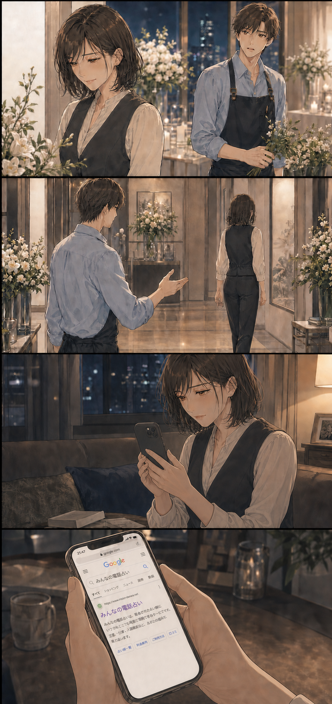
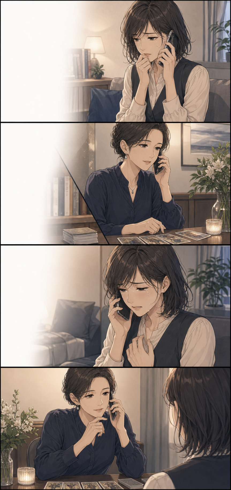

ある日の夜、23:48
信じたい。でも
このままは怖い。
でも、ときどき「私の時間はどうなるんだろう」と不安になる。誰にも言えないまま、ひとりで答えを探していました。
あなたが知りたいのは、どんなことですか？
- 1あの人が心に隠している、本当の気持ち
- 2二人の恋が、これからどう進んでいくのか
- 3この恋を待つべきか、次へ進むべきか
彼氏がいるのに、
年下の彼に惹かれてしまった。
42歳の女性が自分の未来を選び直す創作ストーリーです。
付き合って7年。別れる理由はない。でも、一緒にいる理由も分からなくなっていた。
玲美香さんって、
笑うと急にかわいく
なるんですね
女性として見られることなんて、もうないと思っていた。
美香私、彼氏いるよ
玲知ってます。
それでも、もう少し
一緒にいたい
断らなきゃいけないのに、私は彼の服をつかんでいた。
玲嫌なら、今ここで止めます
美香……止めないで
玲そんな顔をされたら、
もう離せません
帰れなくなると分かっていた。それでも、彼の腕を離せなかった。
玲今夜も帰るんですか？
美香帰らないと……。
でも、もう少しだけ
何度も彼の部屋で朝を迎えるうち、長年の恋人より玲の腕を求めるようになっていた。

安心できる7年と、未来の分からない恋。どちらを選んでも後悔する気がした。
彼氏がいるのに別の人を好きになったなんて、誰にも言えなかった。

美香彼氏がいるのに、
別の人を好きになりました。
どちらを選べばいいですか？
先生選ばれることばかり考えて、
自分がどう生きたいかを
置き去りにしていませんか？
先生まず今の関係に答えを出し、
玲さんには身体ではなく
未来を望んでいると伝えてください
玲を選ぶ前に、終わっていた恋を自分の言葉で終わらせた。
美香もう、夜だけ会う関係は嫌。
未来がないなら
今日で終わりにする
玲僕は最初から、
夜だけのつもりなんて
ありません
玲結婚を考えられない相手を、
何度も朝まで抱きしめたり
しません。本気ですよ、僕は
42歳。もう一度、自分で未来を選び、愛する人と結婚した。
答えをもらったのではない。話したことで本音に気づき、自分で一歩を踏み出せた。
選べなかったのではなく、自分の本音を我慢しすぎていたのかもしれない。
私、この恋で我慢しすぎてる？※本作品は成人同士の恋愛と電話相談を題材にした創作ストーリーです。感じ方や結果には個人差があります。
SECRET LOVE CHECK
私、我慢しすぎてる？
「我慢しすぎ恋」診断
6枚のカードをめくって、
今のあなたが飲み込んでいる気持ちを
そっと確認してみませんか？
会える日や連絡のタイミングは、
いつも彼の都合で決まる
「もう少し待って」という言葉を、
長く信じ続けている
本当は寂しくても、彼には
「大丈夫」と答えてしまう
この関係について、友人や家族には
すべてを話せない
何度も離れようとしたのに、
連絡が来ると戻ってしまう
彼を待つ間に、自分の時間だけが
止まっている気がする
あなたが飲み込んでいる気持ちを
そっと読み解いています……
あなたの恋愛モヤモヤタイプは……
彼の言葉を信じて
待ちすぎタイプ
複雑な恋は、周囲に話しにくいぶん、一人で考え続けてしまいがちです。
電話占いは未来を決めてもらうだけでなく、彼のこと、自分のこと、これからの選択肢を言葉にして整理するためにも利用できます。
無料会員登録で
初回 3,000円OFF クーポン進呈話してみて思ったこと
欲しかったのは、彼の答えより気持ちを話せる時間だったのかも。
電話占いって、正直ちょっと緊張しました。
40代になって、既婚者の彼との関係はもう5年。「妻とは別れる」という言葉を信じて待っていたけれど、会えるのはいつも彼の都合がいいときだけ。友人にも家族にも話せず、このまま何年も待ち続けるのかなと思うと、夜になるたび苦しくなっていました。
先生に聞かれたのは、彼がどうするかよりも「私はこれから、どんな毎日を送りたい？」ということ。占いを受けたからといって、関係がすぐに変わったわけではありません。それでも、彼を待つだけが私の未来じゃないと思えたとき、少しだけ先に希望が見えました。
※40代女性の複雑恋愛を想定した体験イメージです。
聞きたいことはメモでOK
彼の気持ち、二人のこれから、私が大切にしたいこと。
口コミを見ながら、話しやすそうな先生を選ぶ
複雑な恋愛や復縁を得意とする先生から探せました。
いきなり答えを決めなくていい
まずは話してみる。それくらいの気持ちで始めました。
ちょっと安心できたポイント
電話占いって少し不安。
でも、私にも使えそう。
いきなり申し込むのではなく、まずは気になることをちょっと調べてみました。運営元がちゃんとわかる
プライム市場上場グループが運営していると知って、少し安心できました。
悩みに合いそうな先生を探せる
復縁や相手の気持ちなど、得意な相談と口コミから選べます。
初めてなら、お得に試せる
無料会員登録で初回3,000円OFF。まずは先生と特典の内容を見てから決めてもよさそうです。
※別途通話料がかかります。クーポンの利用条件は公式サイトでご確認ください。
話す前のちょっとした準備
話す前に、これだけメモしておくと安心
- 1
聞きたいことをメモする
いちばん知りたいことから順番をつけます。
- 2
先生の得意分野を見る
自分の悩みに近い相談内容や口コミに目を通します。
- 3
今日はここまでと決める
話したい範囲を先に決めておくと安心です。
申し込む前に気になったこと
気になることは、先に調べておきました。
初回特典はどう使う？
特典ごとに使える条件や期限が違うので、先に公式サイトを見ておくと安心です。
先生はどう選ぶ？
復縁などの得意分野と口コミを見て、「話しやすそう」と思える先生から探せます。
相談内容を周囲に知られない？
個人情報の扱いは公式サイトに載っています。気になるときは、先に目を通しておくと安心です。
結果は必ず当たる？
必ず当たるものではありません。未来を決めてもらうのではなく、気持ちを整理するきっかけとして考えています。
何を話せばいいか不安
今の状況と聞きたいことを簡単にメモしておくと、話し始めやすくなります。
ここまで読んだ私へ
今すぐ答えを出さなくても大丈夫。まずは、どんな先生がいるか見てみることにしました。